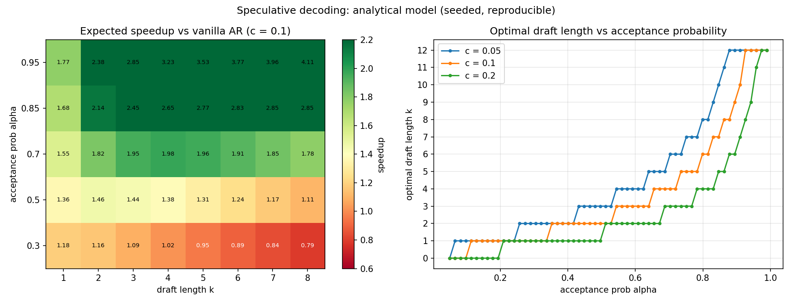

Draft + target speculative sampling: an analytical model validated by Monte Carlo
Vanilla autoregressive decoding is latency-bound: each token requires a full forward pass of the large target model, and tokens are generated strictly one at a time. This makes the per-token latency equal to the cost of the most expensive model you own, with no way to amortize it.
Speculative decoding (draft a few tokens with a cheap model, verify them in one target pass) is known to speed up inference, but most teams deploy it with hand-picked draft lengths and no quantitative model of when it helps, when it is neutral, and when it actively hurts. Without a model, you cannot pick the draft length for your draft model quality, nor can you predict whether a given draft/target pair is worth the engineering effort.
A numpy-only (CPU) simulator for the draft + target speculative sampling loop, built around the closed-form analytical model:
E(k, alpha) = (1 - alpha^(k+1)) / (1 - alpha), where k is the draft length and alpha the per-token acceptance probability.S = E / (1 + k*c), where c = (draft cost per token) / (target cost per token).S over candidate draft lengths (k = 0, i.e. plain AR, is always allowed, so it never recommends a slowdown).Everything is seeded (np.random.default_rng(21)) and runs twice with bit-identical headlines. Module: src/llm_inference_engine/spec_decode/ (expected_speedup, optimal_k, simulate).
| Scenario (c=0.1) | Optimal k | Speedup | tok/s vs 25.0 vanilla |
|---|---|---|---|
| alpha=0.95 | 8 | 5.28x | — |
| alpha=0.70 | 4 | 1.98x | 49.5 |
| alpha=0.50 | 2 | 1.46x | 36.5 |
| alpha=0.30 | 1 | 1.18x | 29.5 |
| alpha=0.30, k=8 (too aggressive) | — | 0.79x (slowdown) | 19.8 |
Analytical model E = (1−αk+1)/(1−α), speedup = E/(1+k·c); validated against 120 Monte Carlo cells × 100k trials (max deviation 0.018 tokens). The selector never recommends a slowdown.

experiments/run_experiments.py — re-running reproduces these exactly.1 + k*c grows linearly with draft length while accepted tokens saturate at ~1/(1-alpha). Drafting 8 tokens at alpha=0.3 costs 1.8x the compute per cycle for only ~1.42 accepted tokens: net slowdown of ~21%.src/llm_inference_engine/spec_decode/
model.py # E(k,alpha), speedup, optimal-k selector
sim.py # vectorized Monte Carlo of the accept/reject loop
03-spec-decode/
experiments/run_experiments.py # formula validation + k/alpha/c sweep
results/ # results.md + charts.png (generated)
Full source, tests, and experiment code: 03-spec-decode/ ·
Run: cd 03-spec-decode && python3 experiments/run_experiments.py